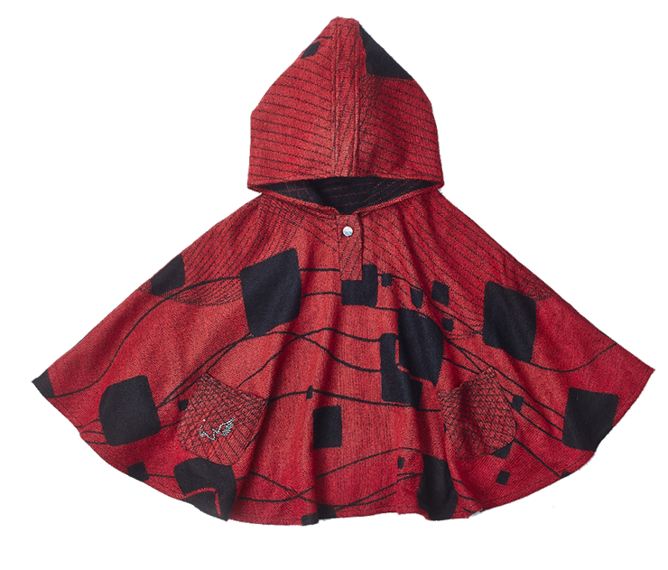

品牌緣起
媽媽對孩子的愛，是專屬的、獨一無二的承諾。
記得小時候，媽媽每年為我訂做一件百褶裙，作為成長的禮物。在記憶中，媽媽為自己 細細量身，到布行仔細挑選表布、裡布，裁剪縫製出專屬於孩子的衣物。衣櫃裡從小到 大一件一件訂做的百褶裙，寫下了時間的軌跡，也寫下了專屬於孩子的回憶，是媽媽給 我最珍貴的禮物。
長大自己有了孩子以後，隨著夫妻雙薪工作、加班，能陪孩子的時間減少了，但是，滿 滿的愛一樣沒有改變。與孩子的時光值得珍惜，媽媽對孩子的愛，是專屬的、獨一無二 的承諾，我們希望能夠給孩子最獨特的紀念，於是，有了創立孩童訂製服品牌的念頭。
透過為孩子訂製專屬的衣服，宸諾希望將媽媽對孩子滿滿的愛轉化為獨特的信物，讓孩 子穿上媽媽的設計與愛，成為親情最珍貴的紀念。
品牌承諾
只給小孩最好的，是我們的堅持。從與孩子肌膚接觸的布料、安全減少拉扯的設計，到 考慮孩子活動方式的打版，我們在意每個細節，因為這是爸媽給小孩珍貴的紀念，也是 我們對爸媽的承諾。

訂製一件可愛的斗篷可以這麼簡單
現在就開始